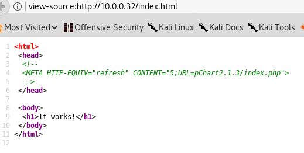

Attacker IP: 10.0.0.22
Target IP: 10.0.0.32
Nmap scan report for 10.0.0.32
Host is up (0.0021s latency).
Not shown: 997 filtered ports
PORT STATE SERVICE VERSION
22/tcp closed ssh
80/tcp open http Apache httpd 2.2.21 ((FreeBSD) mod_ssl/2.2.21 OpenSSL/0.9.8q DAV/2 PHP/5.3.8)
|_http-title: Site doesn't have a title (text/html).
8080/tcp open http Apache httpd 2.2.21 ((FreeBSD) mod_ssl/2.2.21 OpenSSL/0.9.8q DAV/2 PHP/5.3.8)
|_http-title: 403 Forbidden
MAC Address: 00:0C:29:24:31:06 (VMware)
Device type: general purpose
Running: FreeBSD 7.X|8.X|9.X
OS CPE: cpe:/o:freebsd:freebsd:7 cpe:/o:freebsd:freebsd:8 cpe:/o:freebsd:freebsd:9
OS details: FreeBSD 7.0-RELEASE - 9.0-RELEASE
Network Distance: 1 hop
Just two ports open. dirb and nikto didn't give anything interesting back. nikto did print that mod_ssl may have a vuln. I've seen that before. It's this exploit https://www.exploit-db.com/exploits/764/ but it doesn't work on Apache 2.2.21...
Just when I was about to give up, I decided to check the source code on the web pages to see if there is anything in there that would lead me to find what type of webapp is running on it.
I see this:

That brings me here:

Ran dirb again and it found these:
---- Scanning URL: http://10.0.0.32/pChart2.1.3/ ----
==> DIRECTORY: http://10.0.0.32/pChart2.1.3/cache/
==> DIRECTORY: http://10.0.0.32/pChart2.1.3/class/
==> DIRECTORY: http://10.0.0.32/pChart2.1.3/data/
==> DIRECTORY: http://10.0.0.32/pChart2.1.3/examples/
==> DIRECTORY: http://10.0.0.32/pChart2.1.3/fonts/
pchart2.1.3 is vulnerabilities. they're listed here https://www.exploit-db.com/exploits/31173/
I was able to get the passwd file

oss* user names are related to oss-sec hids obviously.
I looked at /etc/rc.conf file.

here are the firewall rules

I also found the apache config file:

Access and error logs:
http://10.0.0.32/pChart2.1.3/examples/index.php?Action=View&Script=/var/log/httpd-error.log
http://10.0.0.32/pChart2.1.3/examples/index.php?Action=View&Script=/var/log/httpd-access.log
There is also this:

I googled how to configure apache access based on user agent and it looks like that's whats going on here. I sent a request to 8080 and in burp modified the user agent to be mozilla/4.0.
You can also change burp to replace user agent, which is what I ended up doing

This is what I see on 8080 now:

Examining the code shows this:

There is an exploit for this on exploit db https://www.exploit-db.com/exploits/21665/ there is also this one https://www.exploit-db.com/exploits/25849/
i used the second but I did it from inside of burp.

and I had a shell, kinda

There is netcat on the system and it's able to connect to me but disconnects. -e doesn't seem to work either.
I used reverse php shell included in kali and transfered it to the target, after modifying it

It worked!

After that I found two exploits for freebsd 9.0
https://www.exploit-db.com/exploits/28718/ and https://www.exploit-db.com/exploits/26368/
I used the second one. I transfered the source code to the target by using netcat and compiled it on the target, since it included gcc.

All the other writeup had sysret exploit...
I went back and checked what I did. Looks like both exploits would work.

I did pwned the VM this time without giving up and looking at walkthrough for help.